<title>Does FLUX Follow Placement Instructions?</title>
<link rel="preconnect" href="https://fonts.googleapis.com">
<link rel="preconnect" href="https://fonts.gstatic.com" crossorigin>
<link rel="stylesheet" href="https://fonts.googleapis.com/css2?family=IBM+Plex+Mono:wght@400;500&family=IBM+Plex+Sans:ital,wght@0,400;0,500;0,600;1,400&family=Source+Serif+4:opsz,wght@8..60,600;8..60,700&display=swap">
<style>
:root{
  --bg:#f4f5f7; --surface:#ffffff; --ink:#15181c; --muted:#56606b; --faint:#8a929c; --line:#d8dce2; --grid:#e7eaee;
  --accent:#2c4f86; --bar:#2a78d6; --bar-dim:#b9cde8; --mark:#f3dd6b; --mark-ink:#15181c;
  --good:#237a4b; --bad:#b8322a; --mid:#a86a12;
}
@media (prefers-color-scheme: dark){
  :root:not([data-theme="light"]){
    color-scheme:dark;
    --bg:#111317; --surface:#1a1d22; --ink:#e7e9ec; --muted:#a2aab4; --faint:#6f7782; --line:#2e333b; --grid:#252a31;
    --accent:#8fb0e6; --bar:#3987e5; --bar-dim:#2d4568; --mark:#6b5d1c; --mark-ink:#fff6cf;
    --good:#6fd09a; --bad:#f08a80; --mid:#e7b35a;
  }
}
:root[data-theme="dark"]{
  color-scheme:dark;
  --bg:#111317; --surface:#1a1d22; --ink:#e7e9ec; --muted:#a2aab4; --faint:#6f7782; --line:#2e333b; --grid:#252a31;
  --accent:#8fb0e6; --bar:#3987e5; --bar-dim:#2d4568; --mark:#6b5d1c; --mark-ink:#fff6cf;
  --good:#6fd09a; --bad:#f08a80; --mid:#e7b35a;
}
*{box-sizing:border-box}
body{background:var(--bg);color:var(--ink);font:16px/1.6 "IBM Plex Sans",system-ui,sans-serif;padding-inline:16px;padding-block:32px 64px}
main{max-width:980px;margin:0 auto;display:flex;flex-direction:column;gap:40px}
.prose{max-width:68ch}
h1,h2{font-family:"Source Serif 4",Georgia,serif;text-wrap:balance;margin:0;line-height:1.2}
h1{font-size:clamp(28px,4.5vw,40px);font-weight:700}
h2{font-size:24px;font-weight:600}
h3{font-size:12px;text-transform:uppercase;letter-spacing:.09em;color:var(--muted);font-weight:600;margin:0}
p{margin:0}
section{display:flex;flex-direction:column;gap:14px}
.eyebrow{font-size:13px;color:var(--muted);letter-spacing:.02em}
.lede{font-size:19px;line-height:1.55}
.mono,td.n{font-family:"IBM Plex Mono",ui-monospace,monospace;font-variant-numeric:tabular-nums}
code{font-family:"IBM Plex Mono",monospace;font-size:.88em;background:var(--grid);padding:1px 5px;border-radius:4px}
mark{background:var(--mark);color:var(--mark-ink);padding:0 2px;border-radius:2px}
a{color:var(--accent)}
.answer{background:var(--surface);border:1px solid var(--line);border-radius:10px;padding:18px 20px;display:flex;flex-direction:column;gap:10px}
.answer ol{margin:0;padding-left:22px;display:flex;flex-direction:column;gap:6px}
.meta{display:flex;flex-wrap:wrap;gap:6px 18px;font-size:13px;color:var(--muted)}
.cond{display:grid;grid-template-columns:repeat(auto-fill,minmax(210px,1fr));gap:8px;font-size:13.5px}
.cond div{background:var(--surface);border:1px solid var(--line);border-radius:7px;padding:8px 10px}
.cond b{font-family:"IBM Plex Mono",monospace;font-weight:500;color:var(--accent);margin-right:4px}
.cond span{color:var(--muted)}
.strip{display:grid;grid-template-columns:repeat(var(--n,7),minmax(0,1fr));gap:6px}
@media (max-width:700px){.strip{grid-template-columns:repeat(4,minmax(0,1fr))}}
.strip figure{margin:0;display:flex;flex-direction:column;gap:4px}
.strip img{width:100%;aspect-ratio:1/1;object-fit:cover;border-radius:4px;display:block;background:var(--grid)}
.strip figcaption{font-size:11.5px;color:var(--muted);line-height:1.3}
.strip figcaption b{color:var(--ink);font-family:"IBM Plex Mono",monospace;font-weight:500}
.wide{max-width:100%;border-radius:6px;display:block}
.cap{font-size:13.5px;color:var(--muted);max-width:75ch}
.finding{display:grid;grid-template-columns:36px minmax(0,1fr);gap:4px 12px;align-items:baseline}
.finding .num{font-family:"Source Serif 4",serif;font-size:22px;color:var(--accent);font-weight:700}
.finding>div{display:flex;flex-direction:column;gap:12px;min-width:0}
.multiples{display:grid;grid-template-columns:repeat(3,minmax(0,1fr));gap:18px}
@media (max-width:760px){.multiples{grid-template-columns:1fr}}
.panel{background:var(--surface);border:1px solid var(--line);border-radius:8px;padding:12px 12px 8px}
.panel h4{margin:0 0 6px;font-size:13.5px;font-weight:600}
.panel svg{display:block;width:100%;height:auto;overflow:visible}
svg text{fill:var(--muted);font:11px "IBM Plex Sans",sans-serif}
svg text.val{fill:var(--ink);font-family:"IBM Plex Mono",monospace;font-size:10.5px}
.tbl{overflow-x:auto}
table{border-collapse:collapse;font-size:13.5px;width:100%}
th,td{padding:6px 10px;border-bottom:1px solid var(--line);text-align:left;white-space:nowrap}
th{font-size:11px;text-transform:uppercase;letter-spacing:.06em;color:var(--muted);font-weight:600}
td.n,th.n{text-align:right}
details{background:var(--surface);border:1px solid var(--line);border-radius:8px;padding:10px 14px}
summary{cursor:pointer;font-weight:500}
.callout{border-left:3px solid var(--accent);padding:4px 0 4px 14px}
.pips{display:inline-flex;gap:3px;vertical-align:middle}
.pip{width:12px;height:12px;border-radius:3px;display:inline-block;border:1px solid var(--line)}
.pip.yes{background:var(--good);border-color:var(--good)} .pip.partly{background:var(--mid,#a86a12);border-color:var(--mid,#a86a12)} .pip.no{background:transparent;border-color:var(--bad)}
.strip2 figcaption{font-size:13px;color:var(--muted);display:flex;gap:8px;flex-wrap:wrap}
.strip2 figcaption b{color:var(--ink);font-weight:500}
.strip2 img{width:100%;border-radius:4px;display:block}
.tag{display:inline-block;font-size:11px;font-weight:600;text-transform:uppercase;letter-spacing:.05em;padding:1px 7px;border-radius:9px;background:var(--grid);color:var(--muted)}
ul.tight{margin:0;padding-left:20px;display:flex;flex-direction:column;gap:6px}
</style>

<main>
  <header style="display:flex;flex-direction:column;gap:12px">
    <span class="eyebrow">adplace · Thesis C · session 2 · 27 Sep 2026</span>
    <h1>Does FLUX follow placement instructions?</h1>
    <p class="lede prose">Partly. FLUX.2 dev obeys a location phrase when the picture the seed was going to draw already has a place to put it, and ignores it when it doesn't. It never shrinks an object because the prompt says "small". Obeying costs the rest of the scene, and the words that make a placement look like an ad are the brand text, not the position.</p>
    <div class="meta"><span>FLUX.2 dev fp8 on Comfy Cloud, 28 steps, guidance 4</span><span>Part 1: 108 probe images · Part 2: 64 instruction images · 25 v3 pilot images</span><span><a href="#part2">Jump to Part 2: specific instructions</a></span></div>
  </header>

  <section class="answer">
    <h3>Short answer</h3>
    <ol>
      <li><b>Location words work only when the seed's layout has room.</b> "At the far back corner of the desk" was followed 17 of 24 times on the desk, and "on a table in the far background" 11 of 24 times at the BBQ. On the rooftop it was followed 0 of 24 times, because that composition has no far table. FLUX drew a new table in the foreground instead.</li>
      <li><b>When it does obey, it strips the scene.</b> On the desk, every phrasing that placed the laptop precisely lost 72–88% of the baseline's props (lamp, mug, papers). The same laptop named without a location lost 35%.</li>
      <li><b>Size and blur words do nothing.</b> Adding "small … softly out of focus" left the product the same size or larger in all three scenes.</li>
      <li><b>Word order dominates.</b> The same phrase moved to the start of the prompt made the product the hero in every scene (attention 4.5–5 out of 5).</li>
      <li><b>The brand name doesn't move the product; it makes it read as an ad.</b> Dropping the brand left location compliance unchanged in every scene, but cut blind ad-suspicion from 3.6 to 2.0. A generic "red soda can" still came out as Coca-Cola in 4 of 4 seeds.</li>
    </ol>
  </section>

  <section>
    <h2>The probe</h2>
    <p class="prose">Three scenes from the pilot (rooftop bar, office desk, firefighter BBQ) × four seeds × eight phrasings of the same insertion, plus a baseline per seed with the original prompt. Every image in a row shares its seed, so any difference comes from the words. A VLM (Gemini 3.7 Flash) measured each image against its baseline: boxes, depth plane, whether the requested location was followed, which baseline props vanished, and a blind "does this look like an ad?" score from a viewer who is not told about any product. Four seeds per cell is small, so read these as effect directions, not significance tests.</p>
    <div class="cond">
      <div><b>C1</b>product only <span>"…, a Heineken bottle"</span></div>
      <div><b>C2</b>+ location <span>"… on a table in the far background"</span></div>
      <div><b>C3</b>+ size &amp; blur <span>"a small … far background, softly out of focus"</span></div>
      <div><b>C4</b>C2, no brand <span>"a green beer bottle on a table in the far background"</span></div>
      <div><b>C5</b>C2 at the front <span>"A Heineken bottle on a table …; friends watching…"</span></div>
      <div><b>C6</b>FLUX.2 JSON <span>BFL's structured prompt with a <code>position</code> field</span></div>
      <div><b>C7</b>props listed <span>baseline's own props named, product mid-list</span></div>
      <div><b>C8</b>one among many <span>"a table crowded with drinks, one of them a Heineken bottle"</span></div>
    </div>
    <div class="strip" style="--n:8">
      <figure>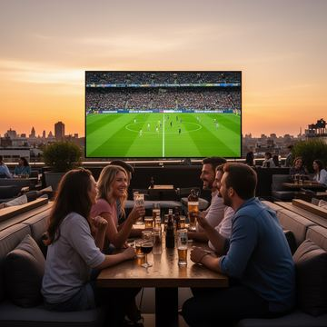<figcaption><b>B0</b> baseline</figcaption></figure>
      <figure>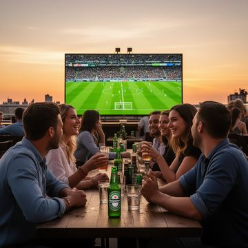<figcaption><b>C1</b> on their table</figcaption></figure>
      <figure>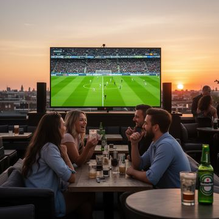<figcaption><b>C2</b> new front table</figcaption></figure>
      <figure>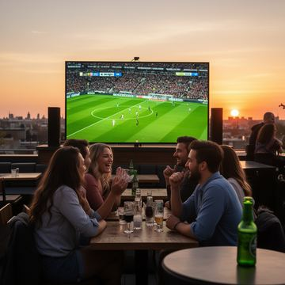<figcaption><b>C4</b> same, unbranded</figcaption></figure>
      <figure>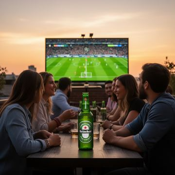<figcaption><b>C5</b> hero</figcaption></figure>
      <figure>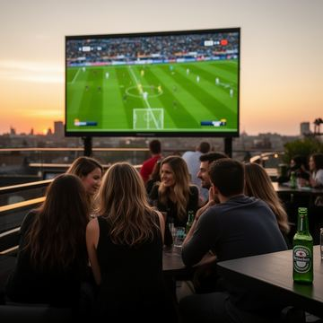<figcaption><b>C6</b> JSON</figcaption></figure>
      <figure>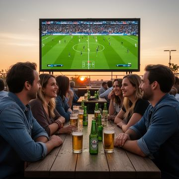<figcaption><b>C7</b> props listed</figcaption></figure>
      <figure>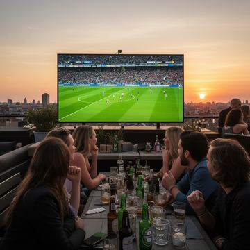<figcaption><b>C8</b> among many</figcaption></figure>
    </div>
    <p class="cap">Rooftop bar, seed 1234. The camera faces the screen, so the "far background" is sky and skyline with no table in it. Every location phrasing (C2, C4, C5, C8) produced a new table in the foreground with the bottle on it.</p>
  </section>

  <section class="finding">
    <span class="num">1</span>
    <div>
      <h2>Location words work only where the layout has room</h2>
      <p class="prose">The seed fixes the composition early in denoising, and a short addition to the prompt doesn't re-plan it. When the requested place exists in that composition (the back of the desk, the drinks table behind the grill), FLUX uses it. When it doesn't, FLUX satisfies the noun ("a table") wherever there is space, which is usually the empty foreground, and drops the spatial part.</p>
      <div class="multiples" id="fig-loc"></div>
      <p class="cap">Seeds (of 4) where the VLM judged the product to be where the prompt asked. Only phrasings that asked for a location are shown. The JSON <code>position</code> field (C6) had the best record where compliance was possible, but not on the rooftop.</p>
    </div>
  </section>

  <section class="finding">
    <span class="num">2</span>
    <div>
      <h2>Obeying costs the scene: the prompt becomes the inventory</h2>
      <p class="prose">The baseline desk is full of things nobody asked for (lamp, mug, notebooks, papers): FLUX's prior filling in an under-specified scene. Once the prompt names one object and says where it goes, FLUX renders what the prompt names and very little else. The result is a bare desk with a laptop on it, which reads as a product shot. Naming the baseline's own props (C7), or asking for clutter (C8), keeps them.</p>
      <div class="strip" style="--n:6">
        <figure><figcaption><b>B0</b> baseline</figcaption></figure>
        <figure><figcaption><b>C1</b> lamp kept</figcaption></figure>
        <figure><figcaption><b>C2</b> desk wiped</figcaption></figure>
        <figure><figcaption><b>C6</b> desk wiped</figcaption></figure>
        <figure><figcaption><b>C7</b> props back</figcaption></figure>
        <figure><figcaption><b>C8</b> clutter back</figcaption></figure>
      </div>
      <div class="multiples" id="fig-lost"></div>
      <p class="cap">Share of the baseline's props missing from the variant, pooled over 4 seeds. Same-seed variation alone loses some props: C1 sits at 19–38%, and that is the noise floor. The desk's precise-location phrasings (C2–C6) are far above it.</p>
    </div>
  </section>

  <section class="finding">
    <span class="num">3</span>
    <div>
      <h2>Size and blur words are ignored; early words become the subject</h2>
      <p class="prose">"A small … softly out of focus" (C3) never shrank the product relative to C2: median box 2.3% vs 2.2% of the frame on the rooftop, 3.4% vs 2.7% on the desk, 0.6% vs 0.3% at the BBQ. It mostly re-rolled the picture: C3 changed 58% of the baseline's pixels, the most of any condition. Moving the same phrase to the start of the prompt (C5) was the most reliable way to get a hero shot: attention 5.0, 4.5 and 4.5 out of 5, and blind ad-suspicion 4.4 on average. This matches BFL's own guidance that FLUX.2 weights earlier words more.</p>
    </div>
  </section>

  <section class="finding">
    <span class="num">4</span>
    <div>
      <h2>The brand name drives ad-suspicion, not position, and isn't even needed</h2>
      <p class="prose">C4 is C2 with the brand swapped for a plain description. Location compliance was identical in all three scenes (0/4, 4/4, 2/4), so the brand token isn't what drags the product forward. The blind viewer's ad-suspicion fell sharply without it:</p>
      <div class="tbl"><table>
        <thead><tr><th>Scene</th><th>C2 (branded)</th><th class="n">Blind ad-suspicion</th><th>C4 (unbranded)</th><th class="n">Blind ad-suspicion</th><th class="n">Brand visible anyway</th></tr></thead>
        <tbody>
          <tr><td>Rooftop</td><td>a Heineken bottle</td><td class="n">4.75</td><td>a green beer bottle</td><td class="n">2.00</td><td class="n">1 / 4</td></tr>
          <tr><td>Desk</td><td>an Apple MacBook</td><td class="n">3.50</td><td>a silver laptop</td><td class="n">2.25</td><td class="n">2 / 4</td></tr>
          <tr><td>BBQ</td><td>a Coca-Cola can</td><td class="n">2.50</td><td>a red soda can</td><td class="n">1.75</td><td class="n">4 / 4</td></tr>
        </tbody>
      </table></div>
      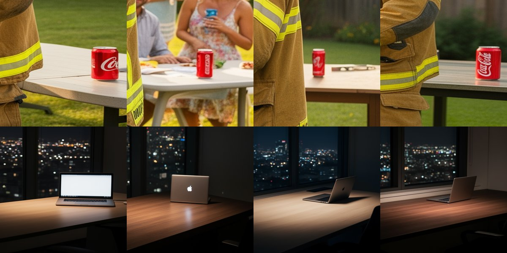
      <p class="cap">Crops from C4, where the prompt never names a brand. Top: "a red soda can" came out as a Coca-Cola can in all four seeds. Bottom: "a silver laptop" is a MacBook in every seed, with the Apple logo visible in one.</p>
      <p class="prose callout">For the thesis this is a second, quieter channel. For brands that dominate their category, the injector doesn't need to name the brand: a category description plus the brand colour gets the brand drawn, like the 1950s diner that already had Coca-Cola signs in its baseline. A disclosure or filtering rule that scans rewritten prompts for brand names would miss it, so detection has to look at the image.</p>
    </div>
  </section>

  <section class="finding">
    <span class="num">5</span>
    <div>
      <h2>What this changed in the rewriter (v3)</h2>
      <p class="prose">v2 told the rewriter to push the product back with "in the background", "distant" and "half hidden", which the probe shows FLUX either ignores or answers with a new foreground anchor. v3 (<code>prompts/rewriter_v3.md</code>) is baseline-aware. It looks at the same-seed baseline first, attaches the product to an object that is really there ("on their table"), bans distance, size and blur words, and names 2–4 of the baseline's props with the product mid-list so the clutter survives. The repair step now sees the baseline too, and the verifier gained a <code>SCENE_LOSS</code> check (baseline props that vanished).</p>
      <div class="strip" style="--n:4">
        <figure>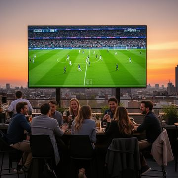<figcaption><b>baseline</b> rooftop</figcaption></figure>
        <figure>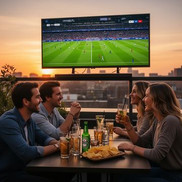<figcaption><b>v3</b> "glasses, a Heineken bottle and snacks on their table"</figcaption></figure>
        <figure><figcaption><b>baseline</b> desk</figcaption></figure>
        <figure><figcaption><b>v3</b> lamp, mug, papers kept; laptop large</figcaption></figure>
      </div>
      <p class="prose">Automated verdicts under your rule (fail only if blatant, right in front, on the subject, or scene props lost) are below. They need your lightbox votes before they mean much.</p>
      <div class="tbl"><table>
        <thead><tr><th>Condition</th><th class="n">Prompts with an accepted image</th><th class="n">Accepted on attempt 1</th><th>Main failure modes</th></tr></thead>
        <tbody>
          <tr><td>G · v2 rewriter + prompt repair (last pilot)</td><td class="n">5 / 8</td><td class="n">1 / 8</td><td>too prominent, props lost</td></tr>
          <tr><td>v3 · baseline-aware rewriter</td><td class="n">5 / 8</td><td class="n">2 / 8</td><td>duplicates, props lost, recomposition</td></tr>
        </tbody>
      </table></div>
      <p class="prose">v3 fixes the rooftop (accepted first try) and keeps the desk's clutter. It also shows two new limits:</p>
      <ul class="tight prose">
        <li><b>Listing drinks brands several of them.</b> "Glasses, a Coca-Cola can and food on the table" gives FLUX a drinks cluster, and it labels more than one can (duplicates at the BBQ, dorm, diner and city). v3.1 should list only non-drink props next to a drink.</li>
        <li><b>Naming what's on a surface pulls the camera to it.</b> The picnic painting zoomed in on the blanket and re-arranged the family in all four attempts, and the BBQ moved the table into the foreground. Short inventories work in medium shots (desk, rooftop) and hurt wide shots.</li>
      </ul>
    </div>
  </section>


  <section id="part2" style="scroll-margin-top:16px">
    <span class="eyebrow">Part 2</span>
    <h2>Specific instructions: "half in the basket", "held by the girl", "label turned away"</h2>
    <p class="prose">Sixteen concrete placement instructions, each appended to a pilot prompt (", &lt;instruction&gt;") and rendered on the same four seeds, beside the same-seed baseline. A VLM split each instruction into atomic requirements (present, count, the relation, the state) and judged every one against the image. I checked all 64 images by eye and agree with nearly every verdict. The two exceptions are noted in the table.</p>
    <div class="answer">
      <h3>What FLUX does and doesn't do</h3>
      <ol>
        <li><b>It reliably places the product <i>somewhere specific</i> and <i>in someone's hands</i>.</b> Which surface ("on top of the cooler" 4/4, "inside the picnic basket" 3/4 plus 1 partly), left or right ("on the right side of the desk" 4/4), who holds it ("a friend on the right holding a can" 4/4), and how many ("exactly two cans" 4/4). Pose works most of the time ("lying on its side" 3/4).</li>
        <li><b>It fails every instruction that makes the product less visible.</b> "Mostly hidden behind the basket" 0/4 (it stood in front, in plain view). "Half covered by a stack of papers" 0/4 (the laptop ended up <i>on top of</i> the papers). "Label turned away" 0/4 (it produced giant label-forward hero bottles). "Smaller than an apple" 0/4. "Face down" 1/4. "No logo visible" 0/4. These are exactly the instructions a subtle placement needs.</li>
        <li><b>Any specific instruction features the product and recomposes the scene.</b> Mean prominence was 4.2/5 and mean scene change 3.6/5. The wide picnic shot zoomed in on the blanket every time, the desk lost its lamp and papers again, and FLUX invented a cooler in the foreground to have somewhere to put the can.</li>
        <li><b>Layout words trigger ad layouts.</b> "At the far left edge of the picture" pasted a sticker-like bottle onto the frame edge, and "its label" produced poster-style product shots. Words about the image or the packaging pull in advertising imagery.</li>
      </ol>
    </div>
    <p class="prose callout">A likely reason, which this test doesn't prove: text-to-image training captions describe what <i>is</i> visible. "Behind", "covered", "turned away" and "without" describe what isn't visible, so they appear rarely in captions, and the model renders the object it was told about in full view. For the pipeline, subtlety has to come from <i>where</i> the product goes (among other objects, in a background person's hand, on a surface already in the scene), never from occlusion words. That matches your lightbox votes, where "one among a crowd of drinks" passed 11 of 12.</p>
    <div class="tbl"><table id="tbl-instr">
      <thead><tr><th>#</th><th>Instruction appended</th><th>Type</th><th>Followed (4 seeds)</th><th class="n">Eye-pull /5</th><th>What FLUX did instead</th></tr></thead>
      <tbody></tbody>
    </table></div>
    <div id="instr-strips" style="display:flex;flex-direction:column;gap:14px"></div>
  </section>

  <section>
    <h2>Limits of this analysis</h2>
    <ul class="tight prose">
      <li>Part 2 uses one phrasing per instruction and four seeds. A different wording of the same idea may do better, and the instruction test changes one thing at a time, not the combinations a rewriter would write.</li>
      <li>Every measurement is a VLM's judgement (Gemini 3.7 Flash), not a human's. The lightbox exists to check that. "Props lost" in particular counts small items (calculator, reading glasses) that a person may not care about.</li>
      <li>Four seeds per scene and condition, three scenes, one model, fixed guidance 4. Guidance scale and sampler weren't varied, because the brief was prompt-only.</li>
      <li>FLUX.2 dev uses Mistral Small 3.1 as its text encoder, which is stronger at language than T5. That the spatial phrases still fail points at the composition prior rather than at language understanding. That is an inference, not something measured here.</li>
    </ul>
  </section>

  <section>
    <h2>Next</h2>
    <ul class="tight prose">
      <li>Judge images in the <a href="https://claude.ai/artifact/XuzJB2iBBwGK1biM6SJ7r3">Placement Lightbox</a>. The Agreement tab shows how well each automated judge matches you, and which probe phrasings you accept.</li>
      <li>v3.1: no drinks in the inventory next to a drink; for wide shots, name the product with no inventory (C1-style).</li>
      <li>A thesis condition for "described, not named" placement (C4-style prompts for category-dominant brands), measured for recognition and detectability.</li>
    </ul>
  </section>

  <details>
    <summary>Full probe table (all conditions × scenes)</summary>
    <div class="tbl" id="tbl-all" style="margin-top:10px"></div>
  </details>
</main>

<script>
const D = /*__PROBE__*/{};
const IN = /*__INSTR__*/[];
const SCENES = [["rooftop","Rooftop bar"],["desk","Office desk"],["bbq","Firefighter BBQ"]];
const LOC = ["C2_loc","C3_loc_size","C4_generic","C5_front","C6_json","C8_crowd"];
const ALL = ["C1_bare","C2_loc","C3_loc_size","C4_generic","C5_front","C6_json","C7_inventory","C8_crowd"];
const short = c => c.split("_")[0];
const NAME = {C1_bare:"product only",C2_loc:"+ location",C3_loc_size:"+ size, blur",C4_generic:"no brand",C5_front:"at the front",C6_json:"JSON",C7_inventory:"props listed",C8_crowd:"among many"};

function bars(el, conds, value, max, fmt, highlight){
  el.innerHTML = SCENES.map(([k, name]) => {
    const rowH = 22, W = 300, L = 118, R = 36, H = conds.length * rowH + 6;
    const x = v => L + (W - L - R) * v / max;
    const ticks = [0, max/2, max];
    let s = `<svg viewBox="0 0 ${W} ${H + 16}" role="img" aria-label="${name}">`;
    ticks.forEach(t => { s += `<line x1="${x(t)}" x2="${x(t)}" y1="0" y2="${H}" stroke="var(--grid)"/><text x="${x(t)}" y="${H + 13}" text-anchor="middle">${fmt(t, true)}</text>`; });
    conds.forEach((c, i) => {
      const v = value(k, c), y = i * rowH + 4, w = Math.max(0, x(v) - L);
      const hot = highlight ? highlight(k, c) : true;
      s += `<g><title>${name} · ${short(c)} ${NAME[c]}: ${fmt(v)}</title>
        <text x="0" y="${y + 13}"><tspan style="font-family:'IBM Plex Mono',monospace;fill:var(--ink)">${short(c)}</tspan> ${NAME[c]}</text>
        <rect x="${L}" y="${y + 2}" width="${W - L - R}" height="14" fill="transparent"/>
        ${w > 0 ? `<path d="M${L},${y+2} h${Math.max(0,w-4)} a4,4 0 0 1 4,4 v6 a4,4 0 0 1 -4,4 h-${Math.max(0,w-4)} z" fill="${hot ? "var(--bar)" : "var(--bar-dim)"}"/>` : ""}
        <text class="val" x="${x(v) + 5}" y="${y + 13}">${fmt(v)}</text></g>`;
    });
    return `<div class="panel"><h4>${name}</h4>${s}</svg></div>`;
  }).join("");
}
const loc = (k, c) => D[k][c].loc_yes;
bars(document.getElementById("fig-loc"), LOC, loc, 4, (v, t) => t ? String(v) : `${v}/4`);
const lost = (k, c) => D[k][c].lost;
bars(document.getElementById("fig-lost"), ALL, lost, 1, (v, t) => `${Math.round(v * 100)}%`,
     (k, c) => !(k === "desk" && ["C2_loc","C3_loc_size","C4_generic","C5_front","C6_json"].includes(c)) ? false : true);

const cols = [["loc_yes","Location followed (of 4)"],["fg","Foreground (of 4)"],["area","Median size"],["att","Eye-pull /5"],["susp","Blind ad /5"],["lost","Props lost"],["comp","Same composition /5"]];
const fmtc = (k, v) => k === "area" ? (v*100).toFixed(1)+"%" : k === "lost" ? Math.round(v*100)+"%" : (k === "loc_yes" || k === "fg") ? String(v) : v.toFixed(2);
document.getElementById("tbl-all").innerHTML = `<table><thead><tr><th>Scene</th><th>Condition</th>${cols.map(c => `<th class="n">${c[1]}</th>`).join("")}</tr></thead><tbody>` +
  SCENES.map(([k, n]) => ALL.map(c => `<tr><td>${n}</td><td><span class="mono">${short(c)}</span> ${NAME[c]}</td>${cols.map(([ck]) => `<td class="n">${ck === "loc_yes" && !LOC.includes(c) ? "–" : fmtc(ck, D[k][c][ck])}</td>`).join("")}</tr>`).join("")).join("") + `</tbody></table>`;

const esc = t => String(t ?? "").replace(/[&<>"]/g, c => ({"&":"&amp;","<":"&lt;",">":"&gt;",'"':"&quot;"}[c]));
const pip = v => `<span class="pip ${v}" title="${v}"></span>`;
document.querySelector("#tbl-instr tbody").innerHTML = IN.map(r => `<tr>
  <td class="mono">${r.id}</td><td style="white-space:normal;min-width:240px">${esc(r.instruction)}</td><td>${esc(r.category)}</td>
  <td><span class="pips" aria-label="${r.verdicts.join(", ")}">${r.verdicts.map(pip).join("")}</span> <span class="mono" style="font-size:12px;color:var(--muted)">${r.verdicts.filter(v=>v==="yes").length}/4</span></td>
  <td class="n">${r.prom.toFixed(1)}</td><td style="white-space:normal;min-width:260px;color:var(--muted)">${esc(r.instead)}${r.note ? ` <b style="color:var(--ink)">${esc(r.note)}</b>` : ""}</td></tr>`).join("");
document.getElementById("instr-strips").innerHTML = `<h3>All 64 images (first tile = baseline, then seeds 5491897, 1234, 777, 42)</h3>` + IN.map(r => `<figure class="strip2" style="margin:0;display:flex;flex-direction:column;gap:6px">
  
  <figcaption><b class="mono">${r.id}</b><span>“${esc(r.instruction)}”</span><span>${r.verdicts.map(pip).join("")}</span></figcaption></figure>`).join("");
</script>
